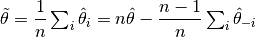
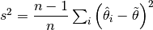

Multi-taper spectral estimation¶
The distribution of power in a signal, as a function of frequency, known as the
power spectrum (or PSD, for power spectral density) can be estimated using
variants of the discrete Fourier transform (DFT). The naive estimate of the
power spectrum, based on the values of the DFT estimated directly from the
signal, using the fast Fourier transform algorithm (FFT) is referred to as a
periodogram (see algorithms.periodogram()). This estimate suffers from
several problems [NR2007]:
- Inefficiency: In most estimation problems, additional samples, or a denser
sampling grid would usually lead to a better estimate (smaller variance of
the estimate, given a constant level of noise). However, this is not the case
for the periodogram. Even as we add more samples to our signal, or increase
our sampling rate, our estimate at frequency
 does not improve. This is
because of the effects these kinds of changes have on spectral
estimates. Adding additional samples will improve the frequency domain
resolution of our estimate and sampling at a finer rate will change the
Nyquist frequency, the highest frequency for which the spectrum can be
estimated. Thus, these changes do not improve the estimate at frequency
.
does not improve. This is
because of the effects these kinds of changes have on spectral
estimates. Adding additional samples will improve the frequency domain
resolution of our estimate and sampling at a finer rate will change the
Nyquist frequency, the highest frequency for which the spectrum can be
estimated. Thus, these changes do not improve the estimate at frequency
.
The inefficiency problem can be solved by treating different parts of the
signal as different samples from the same distribution, while assuming
stationarity of the signal. In this method, a sliding window is applied to
different parts of the signal and the windowed spectrum is averaged from these
different samples. This is sometimes referred to as Welch’s periodogram
[Welch1967] and it is the default method used in
algorithms.get_spectra() (with the hanning window as the window function
used and no overlap between the windows). However, it may lead to the
following problem:
- Spectral leakage and bias: Spectral leakage refers to the fact that the estimate of the spectrum at any given frequency bin is contaminated with the power from other frequency bands. This is a consequence of the fact that we always look at a time-limited signal. In the naive peridogram estimate all the samples within the time-limited signal are taken as they are (implicitly multiplied by 1) and all the samples outside of this time-limited signal are not taken at all (implicitly multiplied by 0). This is akin to what would happen if the signal were multiplied sample-by-sample with a ‘boxcar’ window, so called because the shape of this window is square, going from 0 to 1 over one sampling window. Multiplying the signal with a boxcar window in the time-domain is equivalent (due to the convolution theorem) to convolving it in the frequency domain with the spectrum of the boxcar window. The spectral leakage induced by this operation is demonstrated in the following example.
We start by importing the modules/functions we will need in this example
import numpy as np
import matplotlib.pyplot as plt
import scipy.signal as sig
import scipy.stats.distributions as dist
import nitime.algorithms as tsa
import nitime.utils as utils
from nitime.viz import winspect
from nitime.viz import plot_spectral_estimate
For demonstration, we will use a window of 128 points:
npts = 128
fig01 = plt.figure()
# Boxcar with zeroed out fraction
b = sig.boxcar(npts)
zfrac = 0.15
zi = int(npts * zfrac)
b[:zi] = b[-zi:] = 0
name = 'Boxcar - zero fraction=%.2f' % zfrac
winspect(b, fig01, name)
{kind=link}
The figure on the left shows a boxcar window and the figure on the right shows the spectrum of the boxcar function (in dB units, relative to the frequency band of interest).
These two problems can together be mitigated through the use of other windows. Other windows have been designed in order to optimize the amount of spectral leakage and limit it to certain parts of the spectrum. The following example demonstrates the spectral leakage for several different windows (including the boxcar):
fig02 = plt.figure()
# Boxcar with zeroed out fraction
b = sig.boxcar(npts)
zfrac = 0.15
zi = int(npts * zfrac)
b[:zi] = b[-zi:] = 0
name = 'Boxcar - zero fraction=%.2f' % zfrac
winspect(b, fig02, name)
winspect(sig.hanning(npts), fig02, 'Hanning')
winspect(sig.bartlett(npts), fig02, 'Bartlett')
winspect(sig.barthann(npts), fig02, 'Modified Bartlett-Hann')
{kind=link}
As before, the left figure displays the windowing function in the temporal domain and the figure on the left displays the attentuation of spectral leakage in the other frequency bands in the spectrum. Notice that though different windowing functions have different spectral attenuation profiles, trading off attenuation of leakage from frequency bands near the frequency of interest (narrow-band leakage) with leakage from faraway frequency bands (broad-band leakage) they are all superior in both of these respects to the boxcar window used in the naive periodogram.
Another approach which deals with both the inefficiency problem and with the spectral leakage problem is the use of taper functions. In this approach, the entire signal is multiplied by a time-varying function. Several of these functions may be used in order to emphasize and de-emphasize different parts of the signal and these can be constructed to be orthogonal to each other, constructing maximally independent samples at the length of the signal. As we will see below, this allows for statistical estimation of the distribution of the spectrum.
Discrete prolate spheroidal sequences (DPSS, also known as Slepian sequences)
[Slepian1978] are a class of taper functions which are constructed as a
solution to the problem of concentrating the spectrum to within a pre-specified
bandwidth. These tapers can be constructed using
algorithms.dpss_windows(), but for the purpose of spectral estimation, it
is sufficient to specify the bandwidth (which defines the boundary between
narrow-band and broad-band leakage) as an input to
algorithms.mutli_taper_psd() and this function will then construct the
appropriate windows, calculate the tapered spectra and average them.
We will demonstrate the use of DPSS in spectral estimation on a time-series with known spectral properties generated from an auto-regressive process.
We start by defining a function which will be used throughout this example:
def dB(x, out=None):
if out is None:
return 10 * np.log10(x)
else:
np.log10(x, out)
np.multiply(out, 10, out)
And the conversion factor from ln to dB:
ln2db = dB(np.e)
Next, we generate a sequence with known spectral properties:
N = 512
ar_seq, nz, alpha = utils.ar_generator(N=N, drop_transients=10)
ar_seq -= ar_seq.mean()
This is the true PSD for this sequence:
fgrid, hz = tsa.freq_response(1.0, a=np.r_[1, -alpha], n_freqs=N)
psd = (hz * hz.conj()).real
This is a one-sided spectrum, so we double the power:
psd *= 2
dB(psd, psd)
We begin by using the naive periodogram function (tsa.periodogram() in
order to calculate the PSD and compare that to the true PSD calculated above.
freqs, d_psd = tsa.periodogram(ar_seq)
dB(d_psd, d_psd)
fig03 = plot_spectral_estimate(freqs, psd, (d_psd,), elabels=("Periodogram",))
{kind=link}
Next, we use Welch’s periodogram, by applying tsa.get_spectra(). Note
that we explicitely provide the function with a ‘method’ dict, which specifies
the method used in order to calculate the PSD, but the default method is ‘welch’.
welch_freqs, welch_psd = tsa.get_spectra(ar_seq,
method=dict(this_method='welch', NFFT=N))
welch_freqs *= (np.pi / welch_freqs.max())
welch_psd = welch_psd.squeeze()
dB(welch_psd, welch_psd)
fig04 = plot_spectral_estimate(freqs, psd, (welch_psd,), elabels=("Welch",))
{kind=link}
Next, we use the multi-taper estimation method. We estimate the spectrum:
f, psd_mt, nu = tsa.multi_taper_psd(
ar_seq, adaptive=False, jackknife=False
)
dB(psd_mt, psd_mt)
And get the number of tapers from here:
Kmax = nu[0] / 2
We calculate a Chi-squared model 95% confidence interval 2*Kmax degrees of freedom (see [Percival1993] eq 258)
p975 = dist.chi2.ppf(.975, 2 * Kmax)
p025 = dist.chi2.ppf(.025, 2 * Kmax)
l1 = ln2db * np.log(2 * Kmax / p975)
l2 = ln2db * np.log(2 * Kmax / p025)
hyp_limits = (psd_mt + l1, psd_mt + l2)
fig05 = plot_spectral_estimate(freqs, psd, (psd_mt,), hyp_limits,
elabels=(r"MT with :math:`\chi^{2}` 95% interval",))
{kind=link}
An iterative method ([Thomson2007]) can be used in order to adaptively set the weighting of the different tapers, according to the actual spectral concentration in the given signal (and not only the theoretical spectral concentration calculated per default).
f, adaptive_psd_mt, nu = tsa.multi_taper_psd(
ar_seq, adaptive=True, jackknife=False
)
dB(adaptive_psd_mt, adaptive_psd_mt)
p975 = dist.chi2.ppf(.975, nu)
p025 = dist.chi2.ppf(.025, nu)
l1 = ln2db * np.log(nu / p975)
l2 = ln2db * np.log(nu / p025)
hyp_limits = (adaptive_psd_mt + l1, adaptive_psd_mt + l2)
fig06 = plot_spectral_estimate(freqs, psd, (adaptive_psd_mt,), hyp_limits,
elabels=('MT with adaptive weighting and 95% interval',))
{kind=link}
As metioned above, in addition to estimating the spectrum itself, an estimate of the confidence interval of the spectrum can be generated using a jack-knifing procedure [Thomson2007].
Let us define the following:
This is the parameter estimate averaged from all the samples in the distribution (all the tapered spectra).
This defines a group of estimates, where each sample is based on leaving one measurement (one tapered spectrum) out.
The jackknifed esimator is computed as:

This estimator is known [Thomson2007] to be distributed about the true parameter theta approximately as a Student’s t distribution, with standard error defined as:

And degrees of freedom which depend on the number of tapers used (Kmax-1):
_, _, jk_var = tsa.multi_taper_psd(ar_seq, adaptive=False, jackknife=True)
jk_p = (dist.t.ppf(.975, Kmax - 1) * np.sqrt(jk_var)) * ln2db
jk_limits = (psd_mt - jk_p, psd_mt + jk_p)
fig07 = plot_spectral_estimate(freqs, psd, (psd_mt,),
jk_limits,
elabels=('MT with JK 95% interval',))
{kind=link}
In addition, if the ‘adaptive’ flag is set to True, an iterative adaptive method is used in order to correct bias in the spectrum.
Finally, we combine the adaptive estimation of the weights with the jack-knifing procedure.
_, _, adaptive_jk_var = tsa.multi_taper_psd(
ar_seq, adaptive=True, jackknife=True
)
# find 95% confidence limits from inverse of t-dist CDF
jk_p = (dist.t.ppf(.975, Kmax - 1) * np.sqrt(adaptive_jk_var)) * ln2db
adaptive_jk_limits = (adaptive_psd_mt - jk_p, adaptive_psd_mt + jk_p)
fig08 = plot_spectral_estimate(freqs, psd, (adaptive_psd_mt,),
adaptive_jk_limits,
elabels=('adaptive-MT with JK 95% interval',))
{kind=link}
We call plt.show() in order to show all the figures:
plt.show()
References
| [NR2007] | W.H. Press, S.A. Teukolsky, W.T Vetterling and B.P. Flannery (2007) Numerical Recipes: The Art of Scientific Computing. Cambridge: Cambridge University Press. 3rd Ed. |
| [Thomson2007] | (1, 2, 3) D.J. Thomson, Jackknifing Multitaper Spectrum Estimates, IEEE Signal Processing Magazine, 2007, pp. 20-30. |
| [Welch1967] | P.D. Welch (1967), The use of the fast fourier transform for the estimation of power spectra: a method based on time averaging over short modified periodograms. IEEE Transcations on Audio and Electroacoustics. |
| [Slepian1978] | Slepian, D. Prolate spheroidal wave functions, Fourier analysis, and uncertainty V: The discrete case. Bell System Technical Journal, Volume 57 (1978), 1371430 |
| [Percival1993] | Percival D.B. and Walden A.T. (1993) Spectral Analysis for Physical Applications: Multitaper and Conventional Univariate Techniques. Cambridge University Press |
Example source code
You can download the full source code of this example.
This same script is also included in the Nitime source distribution under the
doc/examples/ directory.